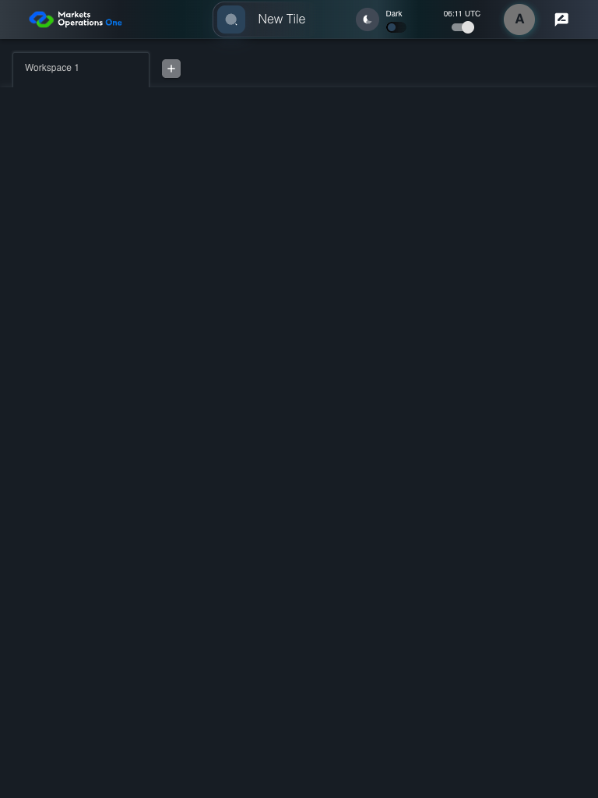
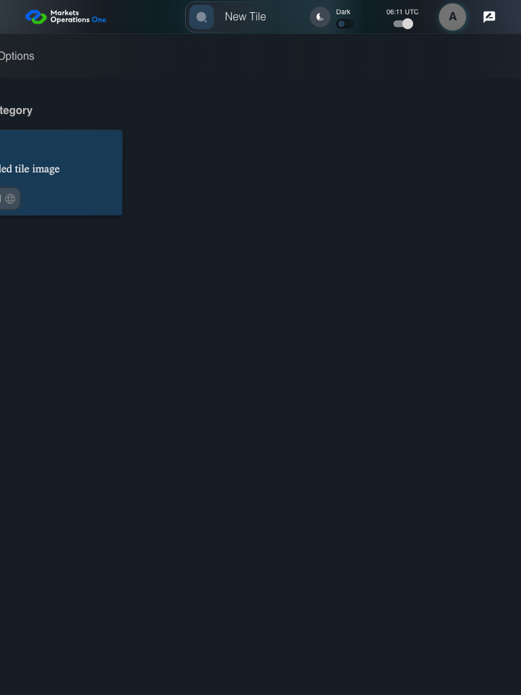
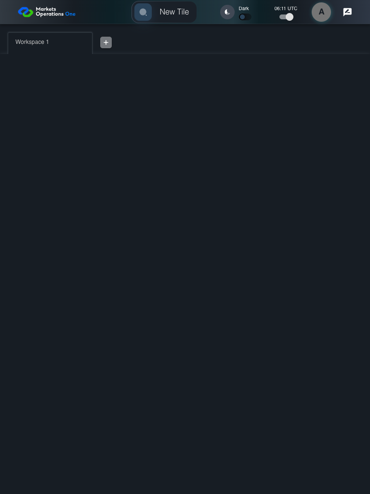
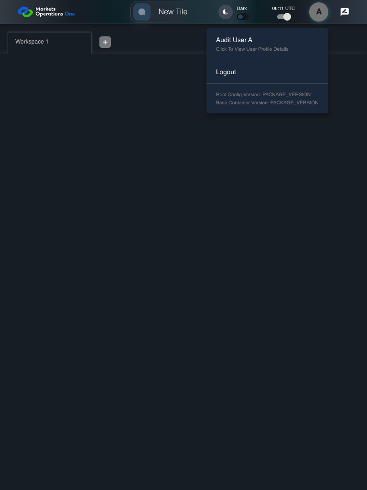

UX-025 responsive shell 768x1024
PASS · application/run-050/ux-025-responsive-shell-768x1024-b8d78b918037-attempt-1 · ACTUAL_APPLICATION_LOCAL_SERVICES
Actual React shell. Controlled catalog, user identity, photo failures, and SystemJS tenant. Chromium only. Accessibility and layout outcomes are proposed probes; no approved conformance standard is inferred.
2026-10-22T06:11:48.793Z to 2026-10-22T06:11:50.338Z
Assertions and result · Artifact manifest · Exact run inputs and source hashes
Result SHA-256:4c0d1870438e8101168db11ea5d44a9f89c218b3f99aa7ea3e242b9c613832b7Screenshot capture: CAPTURED. Named frames: 9.
Step screenshot bindings: COMPLETE. 8/8 canonical steps have execution screenshots.
Bindings measure structural coverage only. They do not establish screenshot content quality or relevance.
Screenshot content review: NOT_REVIEWED. Recorded context: 0/9 frames. Identical image bytes: 2 repeated frames. Recorded context does not establish human visual review.
Canonical step timeline
Given USER-A has Home visible at 768 by 1024 CSS pixels
Execution: PASSED.
1. step-01 Visible state after step 1: Given USER-A has Home visible at 768 by 1024 CSS pixels
2026-10-22T06:11:49.519Z · 768×1024
Step: /Users/lushevol/code/github/ratan-release-impact/workbench/tasks/ui-test-coverage-20261022/test-cases.md:13059
SHA-256:6729da224549398aa6d06c68bffec450b4684a239311acbd16a01f9a2ab7a7acWhen USER-A clicks the section labelled "New Tile" on the Home page
Execution: PASSED.
2. step-02 Visible state after step 2: When USER-A clicks the section labelled "New Tile" on the Home page
2026-10-22T06:11:49.643Z · 768×1024
Step: /Users/lushevol/code/github/ratan-release-impact/workbench/tasks/ui-test-coverage-20261022/test-cases.md:13060
SHA-256:4abea0232db96f88216644e448d04c307777d51052e06cd6c66d781327fb9645Then The section labelled "Tile Options" on the Home page is visible within the viewport or its scroll area
Execution: PASSED.
3. step-03 Visible state after step 3: Then The section labelled "Tile Options" on the Home page is visible within the viewport or its scroll area
2026-10-22T06:11:49.690Z · 768×1024
Step: /Users/lushevol/code/github/ratan-release-impact/workbench/tasks/ui-test-coverage-20261022/test-cases.md:13061
SHA-256:4abea0232db96f88216644e448d04c307777d51052e06cd6c66d781327fb9645Image bytes match frame 2. An unchanged image can be valid for consecutive assertions. This match does not establish correct step content.
When USER-A presses "Escape" inside the section labelled "Tile Options" on the Home page
Execution: PASSED.4. step-04 Visible state after step 4: When USER-A presses "Escape" inside the section labelled "Tile Options" on the Home page
2026-10-22T06:11:49.737Z · 768×1024
Step: /Users/lushevol/code/github/ratan-release-impact/workbench/tasks/ui-test-coverage-20261022/test-cases.md:13062
SHA-256:2113dfc6cc007e8f18700869d9b9e55845b3c3d3f0dcd24b3939d0fd0da7e152Then The section labelled "Tile Options" on the Home page is hidden
Execution: PASSED.
5. step-05 Visible state after step 5: Then The section labelled "Tile Options" on the Home page is hidden
2026-10-22T06:11:49.950Z · 768×1024
Step: /Users/lushevol/code/github/ratan-release-impact/workbench/tasks/ui-test-coverage-20261022/test-cases.md:13063
SHA-256:d7ca81ae0914f1890910b4da1555f21536d4d14574f6abe9ac4bb0559925a6aeWhen USER-A clicks the icon button with test ID "${MFE_APP_PREFIX_STYLE}_avatar_IconButton" on the Home page
Execution: PASSED.
6. step-06 Visible state after step 6: When USER-A clicks the icon button with test ID "${MFE_APP_PREFIX_STYLE}_avatar_IconButton" on the Home page
2026-10-22T06:11:50.021Z · 768×1024
Step: /Users/lushevol/code/github/ratan-release-impact/workbench/tasks/ui-test-coverage-20261022/test-cases.md:13064
SHA-256:3549e8ec5eba5dc635726432aeef8df087048193c114258b5e62a6601361e3ffThen The menu item with test ID "${MFE_APP_PREFIX_STYLE}_avatar_Profile" in the menu with identifier "menu-appbar-avatar" on the Home page is visible without overlap with the menu item labelled "Logout" in the menu with identifier "menu-appbar-avatar" on the Home page
Execution: PASSED.7. step-07 Visible state after step 7: Then The menu item with test ID "${MFE_APP_PREFIX_STYLE}_avatar_Profile" in the menu with identifier "menu-appbar-avatar" on the Home page is visible without overlap with the menu item labelled "Logout" in the menu with identifier "menu-appbar-avatar" on the Home page
2026-10-22T06:11:50.077Z · 768×1024
Step: /Users/lushevol/code/github/ratan-release-impact/workbench/tasks/ui-test-coverage-20261022/test-cases.md:13065
SHA-256:cb43c21ef7e5ce6be02366e4e4624aaa62f0310956ba6c22866e3a1616720886And The menu item labelled "Logout" in the menu with identifier "menu-appbar-avatar" on the Home page is enabled and reachable within the viewport
Execution: PASSED.8. step-08 Visible state after step 8: And The menu item labelled "Logout" in the menu with identifier "menu-appbar-avatar" on the Home page is enabled and reachable within the viewport
2026-10-22T06:11:50.121Z · 768×1024
Step: /Users/lushevol/code/github/ratan-release-impact/workbench/tasks/ui-test-coverage-20261022/test-cases.md:13066
SHA-256:8c4b510e4f98c745269b324477891f57a717eda1505b355ba1454af43b87e766
Additional named frames

The final visible state after the named test assertions.
2026-10-22T06:11:50.188Z · 768×1024Step: Test source: /Users/lushevol/code/github/ratan-release-impact/workbench/e2e/audit-specs/ux-shell.spec.ts:113
SHA-256:
8c4b510e4f98c745269b324477891f57a717eda1505b355ba1454af43b87e766Image bytes match frame 8. An unchanged image can be valid for consecutive assertions. This match does not establish correct step content.
Screenshots establish visible state only. Assertions and traces support functional claims.